Comment les apps présentent une offre gratuite (et le bénéfice d'une offre)
La famille F1b « audio FR qui ne réussissent pas » (Souffleur de rêves, Whisperies, Quelle Histoire, Mes Histoires du Soir, Kidjo, Capitaine Aventure) n'est jamais une référence positive : ce sont les perdants de notre segment exact, donc des contre-exemples de ce qu'il faut faire (et c'est moche). On les regarde pour comprendre ce qu'on évite, on ne s'en inspire pas. Pour un même besoin, on ré-ancre sur les gagnants : F1a (Bayam, KiLi, Alma, Readmio), F4a (ABCmouse, Lingokids), Reading.com, Skybrary, Moshi.
La réponse à tes 5 questions
La synthèse d'abord ; les écrans qui la fondent suivent, groupés par approche.
1. Un seul écran, ou plusieurs ?
Observé Trois configurations existent dans le panel : (a) un écran dédié qui empile titre d'offre + liste de bénéfices + CTA + réassurance (Reading.com, ABCmouse, Skybrary, Moshi exit-intent) ; (b) pas d'écran du tout, l'offre gratuite vit dans la home sous forme de rangée éditorialisée « Mes histoires offertes » (Souffleur, Capitaine, Quelle Histoire) ; (c) une mini-séquence de 3 à 5 slides de bénéfices puis l'offre (Epic, Pickatale, Hooked).
Pour Kidsono : un seul écran. La séquence (c) ferait doublon avec le carrousel de valeur (écrans 2-4, traités à part). L'écran 8 n'a pas à ré-argumenter, il a à donner envie de goûter et lever la friction (sans carte).
2. Qu'est-ce qu'on met dedans ?
Observé Les ingrédients récurrents, par fréquence décroissante :
1/ un titre d'offre clair (ce qu'on obtient gratuitement) ; 2/ le contenu offert montré (couvertures premium des histoires) OU une liste de 3-7 bénéfices ; 3/ un CTA principal pour réclamer le gratuit, souvent + une sortie ; 4/ un bloc de réassurance (« sans carte », « sans engagement », « résiliable », « sécurisé Apple », « sans pub ») ; 5/ parfois de la preuve sociale / autorité (2,5M parents, 50M familles, awards) ; 6/ parfois un prix d'ancrage.
Pour Kidsono, on garde : titre d'offre + contenu offert montré (notre force) + réassurance « sans carte » + CTA. On jette la preuve sociale de masse (on ne l'a pas) et le prix (réservé à l'écran 17).
3. Qu'est-ce qu'on fait ressortir (le héros) ?
Observé Deux écoles. Les modèles d'essai font ressortir l'offre/le prix (Reading.com : « 1 week for free » en énorme). Les modèles de dose/freemium font ressortir le contenu : ils montrent les couvertures premium des histoires offertes (Capitaine « Histoires offertes à découvrir », Souffleur « Mes histoires offertes… », Quelle Histoire en hero jouable).
Kidsono est un modèle de dose, sans essai, et son actif est la beauté du catalogue. Donc le héros = plusieurs belles couvertures d'histoires offertes, signées des éditeurs reconnus. C'est ça qui matérialise « plusieurs histoires offertes » sans avoir à dire « 30 minutes » ni « X histoires ».
4. Est-ce qu'on re-parle des propositions de valeur ?
Observé Les écrans « à liste de bénéfices » re-citent la valeur au moment de l'offre (ABCmouse, Skybrary, Capitaine « Pourquoi », Moshi, Aumio), car le signal a son effet maximal à la décision. Les écrans « contenu en contexte » ne re-citent rien (Souffleur, Quelle Histoire) : ils montrent.
Pour Kidsono : pas de re-pitch complet du carrousel de valeur (il vient de défiler). Au plus, une ligne fine de réassurance qui touche les props utiles à l'acceptation d'un essai de contenu : la sécurité / sans pub, et la caution éditeurs. Estim. L'articulation exacte dépendra des propositions de valeur arrêtées dans l'autre session : à caler quand on les aura.
5. Comment ça marche, mécaniquement ?
Observé Deux mécaniques dominantes. L'essai gaté (US) : « semaine gratuite, no payment now, easy cancel » → on réclame → on entre (Reading.com, ABCmouse, Epic). La dose / freemium (proche de nous) : le contenu gratuit est simplement montré et jouable, présenté comme un cadeau, sans carte ; le mur arrive plus tard, une fois la dose consommée (Capitaine, Souffleur, KiLi, Quelle Histoire, et les feuilletons DramaBox/ONO « X épisodes gratuits »).
Kidsono = dose, sans essai, sans carte. L'écran 8 dit « voici des histoires offertes pour [enfant], sans carte » → CTA → on entre dans l'aha. Le mur (écran 14) tombe après la consommation. La réassurance « sans carte » est l'élément qui débloque l'accès à l'aha : c'est elle qui doit être nette.
Les écrans, groupés par approche
Vignettes = vraies captures du benchmark. Chaque carte : ce qui est écrit (verbatim), et ce qui est intéressant pour notre écran 8.
On met en scène le gratuit (hero, contenu choisi), on ne le pose pas dans un coin
La plus proche de Kidsono, à une condition : chez les gagnants, le gratuit est orchestré (poussé en hero, contenu choisi, lancé). Le gratuit « posé » dans une rangée de catalogue est au contraire la signature des perdants F1b, et il ne convertit pas. Donc on montre les histoires offertes, mais mises en scène.
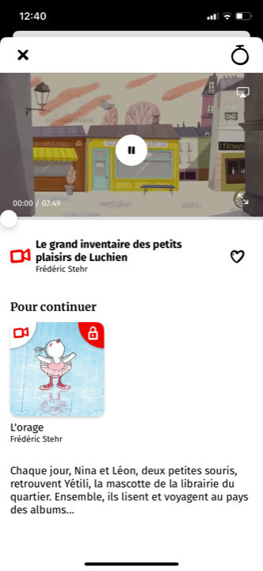
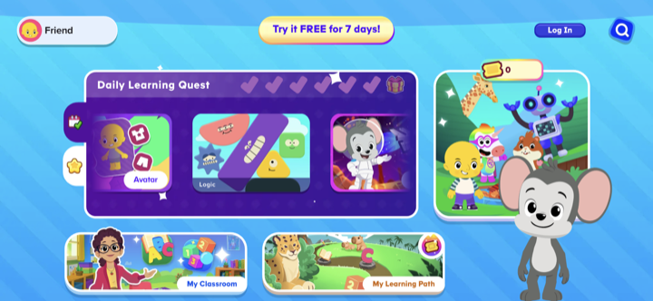
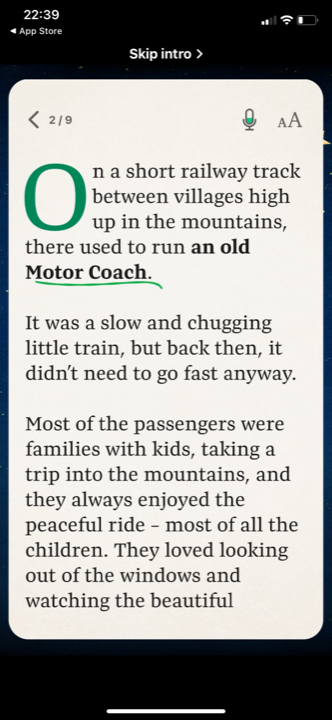
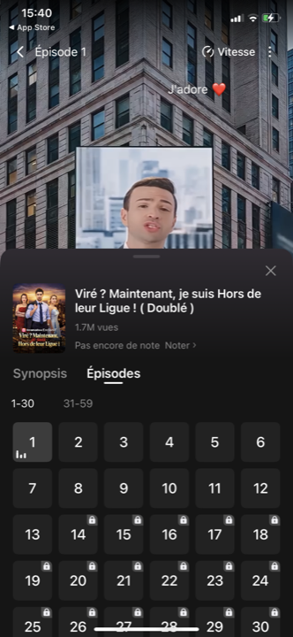
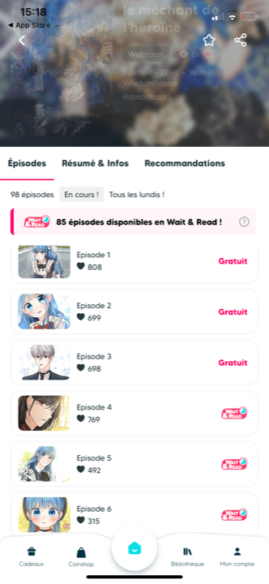
On présente l'offre (gratuite ou palier) comme un plan, avec ses bénéfices
L'offre est un écran à part entière : un titre, une checklist de ce qui est inclus, un CTA, parfois une sortie. Plus « argumentaire » que l'approche A. Utile si on veut un écran 8 qui pose explicitement l'offre, mais attention au doublon avec le carrousel de valeur.
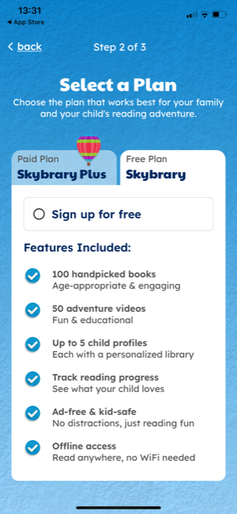
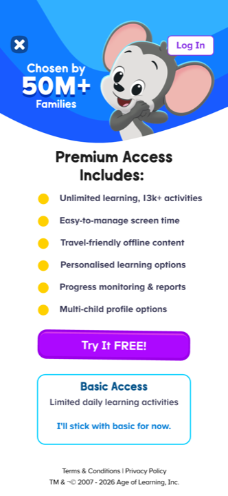
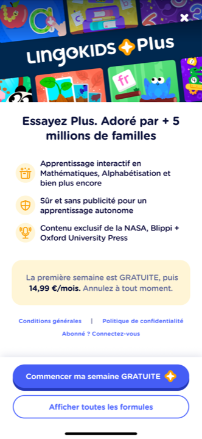
Le wording qui lève la friction : « rien à payer maintenant »
C'est l'élément le plus directement réutilisable pour Kidsono : la manière de dire que c'est offert, sans carte, sans piège. Le marché FR ne le fait pas, c'est notre quick win de confiance.

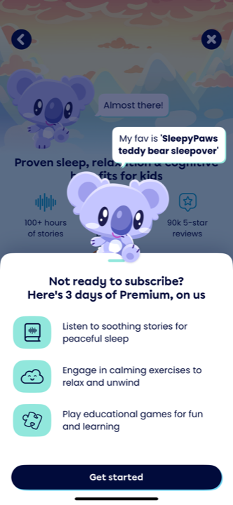

Pour mémoire : ce que font les paywalls-bénéfice (utile pour l'écran 14, pas le 8)
Ces écrans ne présentent pas un gratuit : ils vendent ce qu'on obtient en s'abonnant. Ils nourrissent surtout le futur écran 14 (présentation de l'offre), mais montrent comment articuler bénéfice et prix.
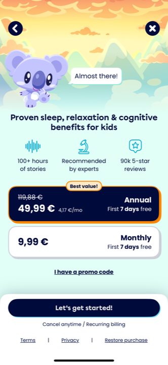


Les contre-modèles repérés
Ce que le panel fait et qu'on ne reproduit pas, surtout sur un public parental premium. En tête : la famille des perdants F1b, dont les patterns ressemblent parfois à ce qu'on veut mais sont précisément ce qui ne convertit pas.
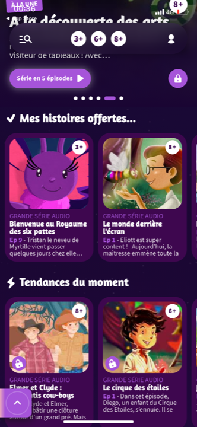
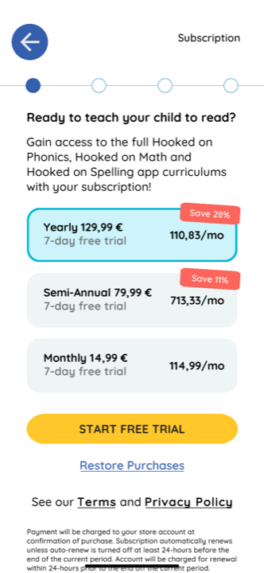
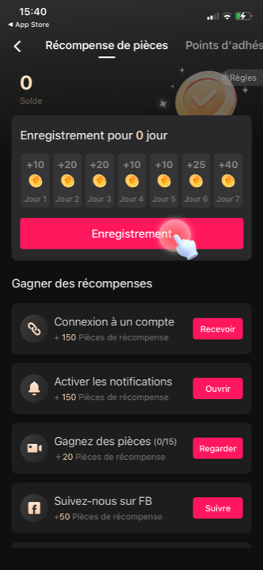
Ce que ça donne pour l'écran 8 de Kidsono
La recommandation (à valider, puis je rédigerai le brief complet)
- Un seul écran, modèle dose / freemium, sans essai, sans carte.
- Héros = le contenu offert, mis en scène (orchestré) : plusieurs belles couvertures d'histoires offertes, signées d'éditeurs reconnus, poussées et non posées. C'est ce qui matérialise « plusieurs histoires offertes » sans dire « 30 minutes » ni un nombre. Modèle : KiLi (contenus complets offerts) et ABCmouse (gratuit en hero), pas le gratuit posé des perdants F1b.
- Le wording de l'offre, voix parent (vouvoiement, espiègle-premium) : « Vos premières histoires sont offertes. » Pas de quantité. Réassurance directe : « Sans carte. » (réf. Reading.com « No payment now », Moshi « on us »).
- Réassurance fine, 1 ligne : sécurité / sans pub + caution éditeurs. Pas de re-pitch du carrousel de valeur.
- CTA unique qui envoie dans l'aha (« Écouter maintenant » / « Découvrir »). Le compte se crée juste après (écran 9), pas avant l'envie.
- Ce qu'on ne met pas : prix (écran 17), preuve sociale de masse (on ne l'a pas), urgence, mur sec.
Question ouverte (à trancher avec toi) : montre-t-on les histoires offertes en hero sur cet écran 8 (façon vitrine), ou cet écran 8 est-il un écran de transition court qui envoie directement dans la home où les histoires offertes sont éditorialisées (façon Souffleur) ? Les deux marchent ; le second est plus fluide et colle au flow actuel de Kidsono.
L'avis
Force : la reco s'aligne sur les apps qui réussissent l'offre gratuite par le contenu (Capitaine, Souffleur, Quelle Histoire) et sur le seul vrai quick win FR (la réassurance « sans carte »). Elle respecte la contrainte « plusieurs histoires, sans quantifier ».
Risques : montrer des couvertures suppose que les visuels du catalogue soient assez beaux et lisibles en vignette (vrai chez Kidsono, vu les fiches). Et « plusieurs histoires offertes » sans nombre peut sembler flou si l'écran ne montre pas au moins 2-3 couvertures concrètes : le montré doit compenser le non-quantifié.
Position vs standard : au standard sur la mécanique de dose, en avance sur le marché FR par la réassurance explicite, contrarian assumé sur l'absence de chiffre (« 30 min » / « X histoires ») au profit du montré.
Document de travail, mission conseil Kidsono. Vignettes = captures réelles du benchmark (référencées par chemin relatif, lecture seule). Source : les 37 analyses écran par écran. Établi le 2026-06-15.